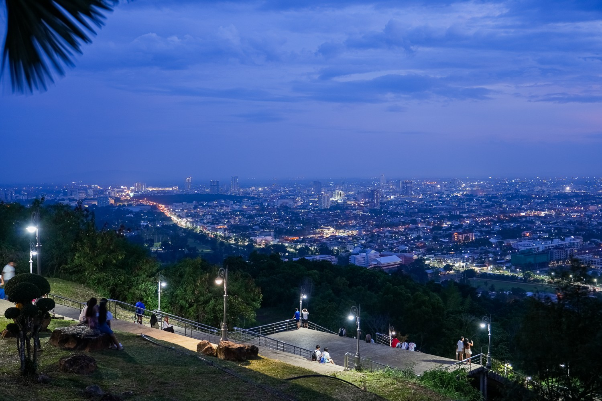
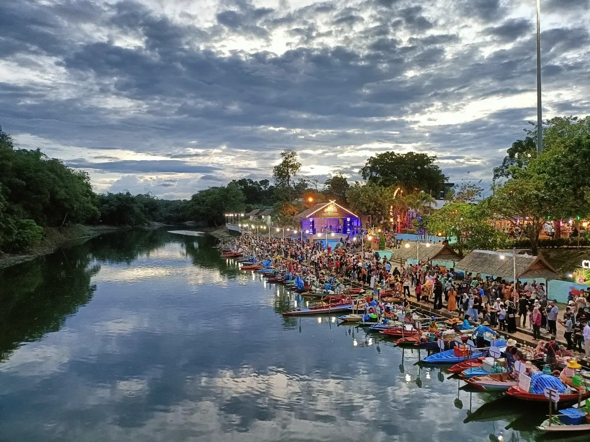
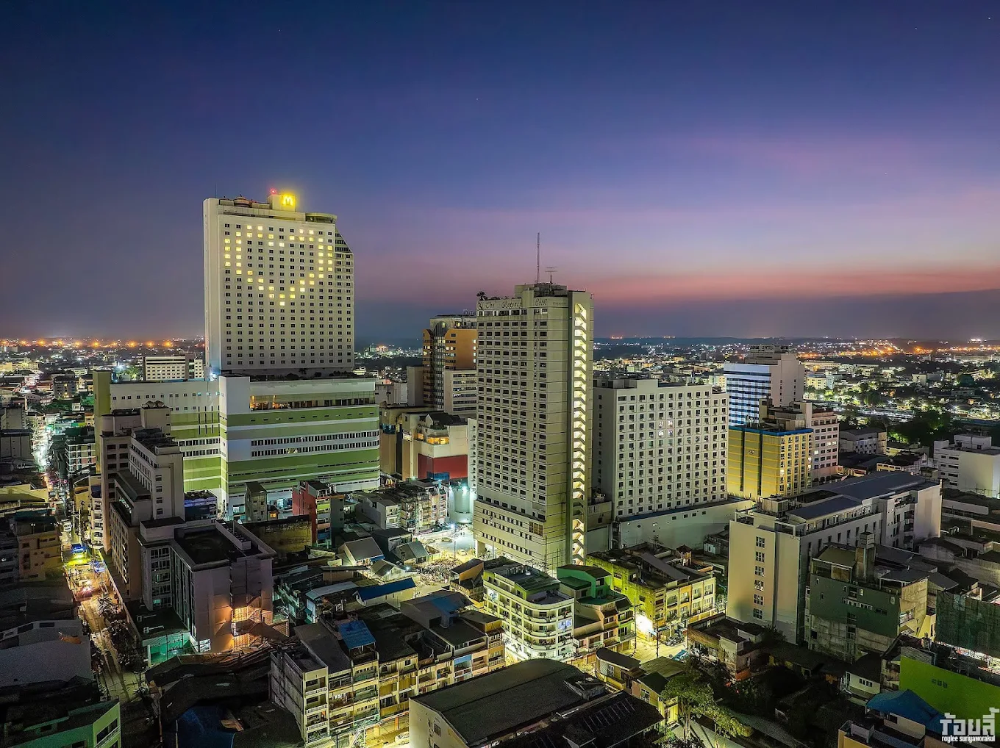

เมืองหาดใหญ่
ศูนย์กลางเศรษฐกิจและการท่องเที่ยวของภาคใต้
ศูนย์กลางเศรษฐกิจและการท่องเที่ยวของภาคใต้
หาดใหญ่ เป็นชื่อรวมของหมู่บ้านโคกเสม็ดชุนและบ้านหาดใหญ่ เดิมดินแดนหาดใหญ่เป็นเนินสูงมีผู้คนอาศัยอยู่ไม่มากนัก การคมนาคมไม่สะดวก เป็นป่าต้นเสม็ดชุน โดยทั่วไปชาวบ้านจึงเรียกว่า บ้านโคกเสม็ดชุน เมื่อทางการได้ตัดทางรถไฟมาถึงท้องถิ่นนี้ จึงมีประชาชนอพยพมาตั้งหลักแหล่งทำมาหากินและมากขึ้นเป็นลำดับ สมัยนั้นสถานีชุมทางรถไฟอยู่ที่สถานีอู่ตะเภา (ด้านเหนือของสถานีรถไฟหาดใหญ่ใน ปัจจุบันเป็นเพียงที่หยุดรถไฟ) เนื่องจากสถานีอู่ตะเภาเป็นที่ลุ่มทำให้น้ำท่วมเป็นประจำ ทางการรถไฟจึงได้ย้ายสถานีมาอยู่ที่สถานีชุมทางหาดใหญ่ในปัจจุบัน ประชาชนจึงได้ทยอยติดตามมาสร้างบ้านเรือนบริเวณสถานีนั่นเอง จึงอาจกล่าวได้ว่ากิจการรถไฟมีบทบาทต่อการขยับขยาย และความเจริญก้าวหน้าของเมืองหาดใหญ่ตลอดมา
ต่อมาได้มีผู้เห็นการณ์ไกลว่าบริเวณสถานีรถไฟหาดใหญ่นี้ ต่อไปภายหน้าจะต้องเจริญก้าวหน้าอย่างแน่นอน จึงได้มีการ จับจองและซื้อที่ดินแปลงใหญ่จากราษฎรในพื้นที่ ซึ่งบุคคลที่ครอบครองที่ดินผืนใหญ่ ๆ อาทิ นายเจียกีซี (ต่อมาได้รับ พระราชทานนามเป็นขุนนิพัทธ์จีนนคร) คุณพระเสน่หามนตรี นายซีกิมหยง และพระยาอรรถกระวีสุนทร ทั้ง 4 ท่านนี้นับว่า เป็นบุคคลที่มีส่วนในการสร้างสรรค์ความเจริญก้าวหน้าให้แก่เมืองหาดใหญ่อย่างแท้จริง โดยได้ทำการตัดถนน สร้างอาคาร บ้านเรือนให้ราษฎรเช่า ตัดที่ดินแบ่งขาย และเงินที่ได้ก็นำไปตัดถนนสายใหม่ต่อไป ทำให้ชุมชนหาดใหญ่เจริญเติบโตขึ้นอย่าง รวดเร็ว จนทางราชการต้องยกฐานะให้บ้านหาดใหญ่เป็นอำเภอที่มีชื่อว่า "อำเภอเหนือ" ต่อมาในปี พ.ศ. 2460 ได้เปลี่ยนชื่อ จากอำเภอเหนือเป็น "อำเภอหาดใหญ่" และได้รับการยกฐานะเป็นอำเภอชั้นเอกในที่สุด

จุดชมวิวเมืองหาดใหญ่และแลนด์มาร์คสำคัญของเมือง

ตลาดน้ำชื่อดังของภาคใต้ที่มีอาหารพื้นเมืองหลากหลาย

ศูนย์กลางการท่องเที่ยวและแหล่งช้อปปิ้งในหาดใหญ่

อาหารใต้รสชาติดั้งเดิมและอาหารไทยฟิวชั่นสไตล์โฮมเมด

ก๋วยเตี๋ยวฮาลาลยอดนิยมของคนหาดใหญ่

ลองเข้าร่วมทริปท่องเที่ยวชุมชนตำบลบางเหรียง 2 วัน 1 คืน
ดูโปรแกรมทริป